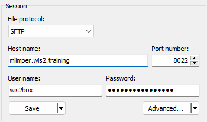

Ingestão de dados para publicação
Resultados de Aprendizagem
Ao final desta sessão prática, você será capaz de:
- Acionar o fluxo de trabalho do wis2box ao fazer upload de dados para o MinIO usando a linha de comando, a interface web do MinIO, SFTP ou um script Python.
- Acessar o painel do Grafana para monitorar o status da ingestão de dados e visualizar os logs da sua instância wis2box.
- Visualizar as notificações de dados WIS2 publicadas pelo seu wis2box usando o MQTT Explorer.
Introdução
No WIS2, os dados são compartilhados em tempo real usando notificações de dados WIS2 que contêm um link "canônico" de onde os dados podem ser baixados.
Para acionar o fluxo de trabalho de dados em um WIS2 Node usando o software wis2box, os dados devem ser carregados no bucket wis2box-incoming no MinIO, o que inicia o fluxo de trabalho do wis2box. Esse processo resulta na publicação dos dados através de uma notificação de dados WIS2. Dependendo dos mapeamentos de dados configurados na sua instância wis2box, os dados podem ser transformados para o formato BUFR antes de serem publicados.
Neste exercício, usaremos arquivos de dados de exemplo para acionar o fluxo de trabalho do wis2box e publicar notificações de dados WIS2 para o conjunto de dados que você configurou na sessão prática anterior.
Durante o exercício, monitoraremos o status da ingestão de dados usando o painel do Grafana e o MQTT Explorer. O painel do Grafana usa dados do Prometheus e do Loki para exibir o status do seu wis2box, enquanto o MQTT Explorer permite que você veja as notificações de dados WIS2 publicadas pela sua instância wis2box.
Observe que o wis2box transformará os dados de exemplo em formato BUFR antes de publicá-los no broker MQTT, conforme os mapeamentos de dados pré-configurados no seu conjunto de dados. Para este exercício, nos concentraremos nos diferentes métodos para fazer upload de dados para a sua instância wis2box e verificar a ingestão e publicação bem-sucedidas. A transformação de dados será abordada mais tarde na sessão prática Ferramentas de Conversão de Dados.
Preparação
Esta seção usa o conjunto de dados para "surface-based-observations/synop" criado anteriormente na sessão prática Configurando Conjuntos de Dados no wis2box. Também requer conhecimento sobre a configuração de estações no wis2box-webapp, conforme descrito na sessão prática Configurando Metadados de Estação.
Certifique-se de que você pode fazer login na sua VM de estudante usando seu cliente SSH (por exemplo, PuTTY).
Certifique-se de que o wis2box está funcionando:
cd ~/wis2box/
python3 wis2box-ctl.py start
python3 wis2box-ctl.py status
Certifique-se de que o MQTT Explorer está em execução e conectado à sua instância usando as credenciais públicas everyone/everyone com uma assinatura no tópico origin/a/wis2/#.
Certifique-se de que você tem um navegador web aberto com o painel do Grafana para a sua instância, navegando para http://YOUR-HOST:3000.
Prepare os Dados de Exemplo
Copie o diretório exercise-materials/data-ingest-exercises para o diretório que você definiu como WIS2BOX_HOST_DATADIR no seu arquivo wis2box.env:
cp -r ~/exercise-materials/data-ingest-exercises ~/wis2box-data/
Note
O WIS2BOX_HOST_DATADIR é montado como /data/wis2box/ dentro do contêiner wis2box-management pelo arquivo docker-compose.yml incluído no diretório wis2box.
Isso permite que você compartilhe dados entre o host e o contêiner.
Adicione a Estação de Teste
Adicione a estação com o identificador WIGOS 0-20000-0-64400 à sua instância wis2box usando o editor de estações no wis2box-webapp.
Recupere a estação do OSCAR:

Adicione a estação aos conjuntos de dados que você criou para publicação em "../surface-based-observations/synop" e salve as alterações usando seu token de autenticação:

Observe que você pode remover esta estação do seu conjunto de dados após a sessão prática.
Testando a Ingestão de Dados da Linha de Comando
Neste exercício, usaremos o comando wis2box data ingest para fazer upload de dados para o MinIO.
Certifique-se de que você está no diretório wis2box e faça login no contêiner wis2box-management:
cd ~/wis2box
python3 wis2box-ctl.py login
Verifique se os seguintes dados de exemplo estão disponíveis no diretório /data/wis2box/ dentro do contêiner wis2box-management:
ls -lh /data/wis2box/data-ingest-exercises/synop_202412030900.txt
Ingestão de Dados Usando wis2box data ingest
Execute o seguinte comando para ingerir o arquivo de dados de exemplo na sua instância wis2box:
wis2box data ingest -p /data/wis2box/data-ingest-exercises/synop_202412030900.txt --metadata-id urn:wmo:md:not-my-centre:synop-test
Os dados foram ingeridos com sucesso? Se não, qual foi a mensagem de erro e como você pode corrigi-la?
Clique para Revelar a Resposta
Os dados não foram ingeridos com sucesso. Você deve ver o seguinte:
Error: metadata_id=urn:wmo:md:not-my-centre:synop-test not found in data mappings
A mensagem de erro indica que o identificador de metadados que você forneceu não corresponde a nenhum dos conjuntos de dados que você configurou na sua instância wis2box.
Forneça o ID de metadados correto que corresponda ao conjunto de dados que você criou na sessão prática anterior e repita o comando de ingestão de dados até ver a seguinte saída:
Processing /data/wis2box/data-ingest-exercises/synop_202412030900.txt
Done
Vá para o console do MinIO no seu navegador e verifique se o arquivo synop_202412030900.txt foi carregado no bucket wis2box-incoming. Você deve ver um novo diretório com o nome do conjunto de dados que você forneceu na opção --metadata-id, e dentro deste diretório, você encontrará o arquivo synop_202412030900.txt:

Note
O comando wis2box data ingest carregou o arquivo no bucket wis2box-incoming no MinIO em um diretório nomeado após o identificador de metadados que você forneceu.
Vá para o painel do Grafana no seu navegador e verifique o status da ingestão de dados.
Verifique o Status da Ingestão de Dados no Grafana
Vá para o painel do Grafana em http://your-host:3000 e verifique o status da ingestão de dados no seu navegador.
Como você pode ver se os dados foram ingeridos e publicados com sucesso?
Clique para Revelar a Resposta
Se você ingeriu os dados com sucesso, você deve ver o seguinte:

Se você não vir isso, verifique se há mensagens de AVISO ou ERRO exibidas na parte inferior do painel e tente resolvê-las.
Verifique o Broker MQTT para Notificações WIS2
Vá para o MQTT Explorer e verifique se você pode ver a mensagem de notificação WIS2 para os dados que você acabou de ingerir.
Quantas notificações de dados WIS2 foram publicadas pelo seu wis2box?
Como você acessa o conteúdo dos dados sendo publicados?
Clique para Revelar a Resposta
Você deve ver 1 notificação de dados WIS2 publicada pelo seu wis2box.
Para acessar o conteúdo dos dados sendo publicados, você pode expandir a estrutura do tópico para ver os diferentes níveis da mensagem até chegar ao último nível e revisar o conteúdo da mensagem.
O conteúdo da mensagem tem uma seção "links" com uma chave "rel" de "canonical" e uma chave "href" com a URL para baixar os dados. A URL estará no formato http://YOUR-HOST/data/....
Observe que o formato dos dados é BUFR, e você precisará de um analisador BUFR para visualizar o conteúdo dos dados. O formato BUFR é um formato binário usado por serviços meteorológicos para troca de dados. Os plugins de dados dentro do wis2box transformaram os dados em BUFR antes de publicá-los.
Após concluir este exercício, saia do contêiner wis2box-management:
exit
Fazendo Upload de Dados Usando a Interface Web do MinIO
Nos exercícios anteriores, você fez upload de dados disponíveis no host wis2box para o MinIO usando o comando wis2box data ingest.
A seguir, usaremos a interface web do MinIO, que permite baixar e fazer upload de dados para o MinIO usando um navegador web.
Refazer Upload de Dados Usando a Interface Web do MinIO
Vá para a interface web do MinIO no seu navegador e navegue até o bucket wis2box-incoming. Você verá o arquivo synop_202412030900.txt que você fez upload nos exercícios anteriores.
Clique no arquivo, e você terá a opção de baixá-lo:

Você pode baixar este arquivo e fazer o upload novamente para o mesmo caminho no MinIO para reacionar o fluxo de trabalho do wis2box.
Verifique o painel do Grafana e o MQTT Explorer para ver se os dados foram ingeridos e publicados com sucesso.
Clique para Revelar a Resposta
Você verá uma mensagem indicando que o wis2box já publicou esses dados:
ERROR - Data already published for WIGOS_0-20000-0-64400_20241203T090000-bufr4; not publishing
Isso demonstra que o fluxo de trabalho de dados foi acionado, mas os dados não foram republicados. O wis2box não publicará os mesmos dados duas vezes.
Fazer Upload de Novos Dados Usando a Interface Web do MinIO
Baixe este arquivo de exemplo synop_202502040900.txt (clique com o botão direito e selecione "salvar como" para baixar o arquivo).
Faça o upload do arquivo que você baixou usando a interface web para o mesmo caminho no MinIO como o arquivo anterior.
A ingestão e publicação dos dados foram bem-sucedidas?
Clique para Revelar a Resposta
Vá para o painel do Grafana e verifique se os dados foram ingeridos e publicados com sucesso.
Se você usar o caminho errado, verá uma mensagem de erro nos logs.
Se você usar o caminho correto, verá mais uma notificação de dados WIS2 publicada para a estação de teste 0-20000-0-64400, indicando que os dados foram ingeridos e publicados com sucesso.

Fazendo Upload de Dados Usando SFTP
O serviço MinIO no wis2box também pode ser acessado via SFTP. O servidor SFTP para o MinIO está vinculado à porta 8022 no host (a porta 22 é usada para SSH).
Neste exercício, demonstraremos como usar o WinSCP para fazer upload de dados para o MinIO usando SFTP.
Você pode configurar uma nova conexão WinSCP como mostrado nesta captura de tela:

As credenciais para a conexão SFTP são definidas por WIS2BOX_STORAGE_USERNAME e WIS2BOX_STORAGE_PASSWORD no seu arquivo wis2box.env e são as mesmas credenciais que você usou para conectar à interface do MinIO.
Quando você fizer login, verá os buckets usados pelo wis2box no MinIO:

Você pode navegar até o bucket wis2box-incoming e depois para a pasta do seu conjunto de dados. Você verá os arquivos que você fez upload nos exercícios anteriores:

Fazer Upload de Dados Usando SFTP
Baixe este arquivo de exemplo para o seu computador local:
synop_202503030900.txt (clique com o botão direito e selecione "salvar como" para baixar o arquivo).
Em seguida, faça o upload para o caminho do conjunto de dados recebido no MinIO usando sua sessão SFTP no WinSCP.
Verifique o painel do Grafana e o MQTT Explorer para ver se os dados foram ingeridos e publicados com sucesso.
Clique para Revelar a Resposta
Você deve ver uma nova notificação de dados WIS2 publicada para a estação de teste 0-20000-0-64400, indicando que os dados foram ingeridos e publicados com sucesso.

Se você usar o caminho errado, verá uma mensagem de erro nos logs.
Carregando Dados Usando um Script Python
Neste exercício, usaremos o cliente Python do MinIO para copiar dados para o MinIO.
O MinIO fornece um cliente Python, que pode ser instalado da seguinte forma:
pip3 install minio
No seu VM de estudante, o pacote 'minio' para Python já estará instalado.
No diretório exercise-materials/data-ingest-exercises, você encontrará um script de exemplo copy_file_to_incoming.py que pode ser usado para copiar arquivos para o MinIO.
Tente executar o script para copiar o arquivo de dados de exemplo synop_202501030900.txt para o bucket wis2box-incoming no MinIO da seguinte forma:
cd ~/wis2box-data/data-ingest-exercises
python3 copy_file_to_incoming.py synop_202501030900.txt
Note
Você receberá um erro, pois o script não está configurado para acessar o endpoint do MinIO no seu wis2box ainda.
O script precisa saber o endpoint correto para acessar o MinIO no seu wis2box. Se o wis2box estiver rodando no seu host, o endpoint do MinIO está disponível em http://YOUR-HOST:9000. O script também precisa ser atualizado com sua senha de armazenamento e o caminho no bucket do MinIO para armazenar os dados.
Atualize o Script e Ingeste os Dados CSV
Edite o script copy_file_to_incoming.py para corrigir os erros, usando um dos seguintes métodos:
- Da linha de comando: use o editor de texto nano ou vim para editar o script.
- Usando WinSCP: inicie uma nova conexão usando o Protocolo de Arquivo SCP e as mesmas credenciais que seu cliente SSH. Navegue até o diretório wis2box-data/data-ingest-exercises e edite copy_file_to_incoming.py usando o editor de texto integrado.
Certifique-se de que você:
- Defina o endpoint correto do MinIO para o seu host.
- Forneça a senha de armazenamento correta para sua instância do MinIO.
- Forneça o caminho correto no bucket do MinIO para armazenar os dados.
Re-execute o script para ingerir o arquivo de dados de exemplo synop_202501030900.txt no MinIO:
python3 ~/wis2box-data/ ~/wis2box-data/synop_202501030900.txt
Certifique-se de que os erros foram resolvidos.
Uma vez que você consiga executar o script com sucesso, você verá uma mensagem indicando que o arquivo foi copiado para o MinIO, e você deve ver notificações de dados publicadas pela sua instância wis2box no MQTT Explorer.
Você também pode verificar o painel do Grafana para ver se os dados foram ingeridos e publicados com sucesso.
Agora que o script está funcionando, você pode tentar copiar outros arquivos para o MinIO usando o mesmo script.
Ingestão de Dados Binários no Formato BUFR
Execute o seguinte comando para copiar o arquivo de dados binários bufr-example.bin para o bucket wis2box-incoming no MinIO:
python3 copy_file_to_incoming.py bufr-example.bin
Verifique o painel do Grafana e o MQTT Explorer para ver se os dados de teste foram ingeridos e publicados com sucesso. Se você encontrar algum erro, tente resolvê-los.
Verifique a Ingestão de Dados
Quantas mensagens foram publicadas para o corretor MQTT para esta amostra de dados?
Clique para Revelar a Resposta
Você verá erros relatados no Grafana, pois as estações no arquivo BUFR não estão definidas na lista de estações da sua instância wis2box.
Se todas as estações usadas no arquivo BUFR estiverem definidas na sua instância wis2box, você deverá ver 10 mensagens publicadas para o corretor MQTT. Cada notificação corresponde a dados de uma estação para um carimbo de data/hora de observação.
O plugin wis2box.data.bufr4.ObservationDataBUFR divide o arquivo BUFR em mensagens BUFR individuais e publica uma mensagem para cada estação e carimbo de data/hora de observação.
Conclusão
Parabéns!
Nesta sessão prática, você aprendeu como:
- Acionar o fluxo de trabalho do wis2box ao carregar dados para o MinIO usando vários métodos.
- Depurar erros comuns no processo de ingestão de dados usando o painel do Grafana e os logs da sua instância wis2box.
- Monitorar notificações de dados WIS2 publicadas pelo seu wis2box no painel do Grafana e no MQTT Explorer.